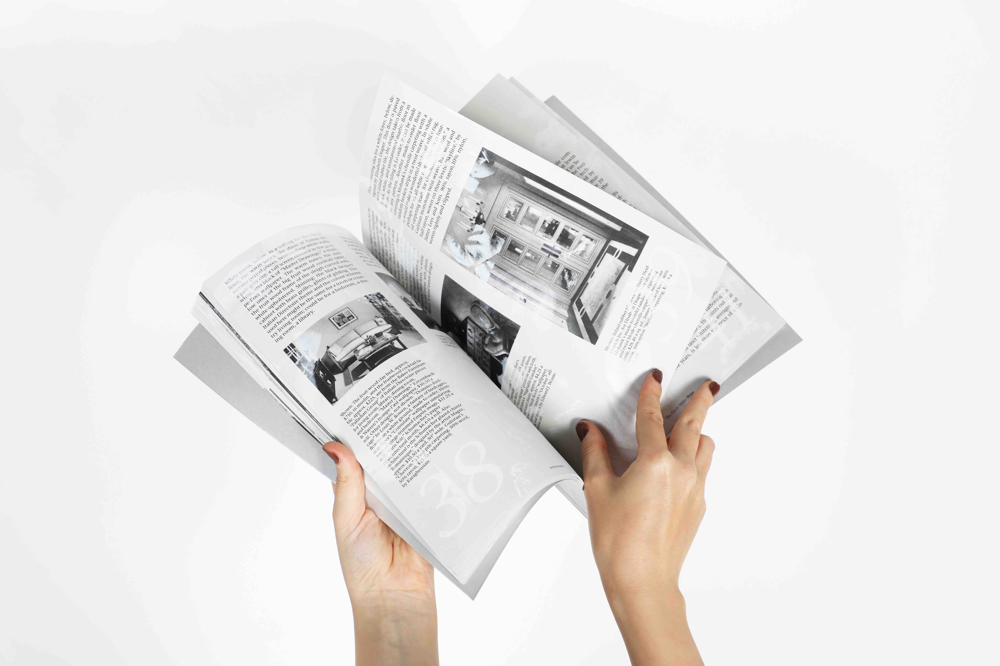
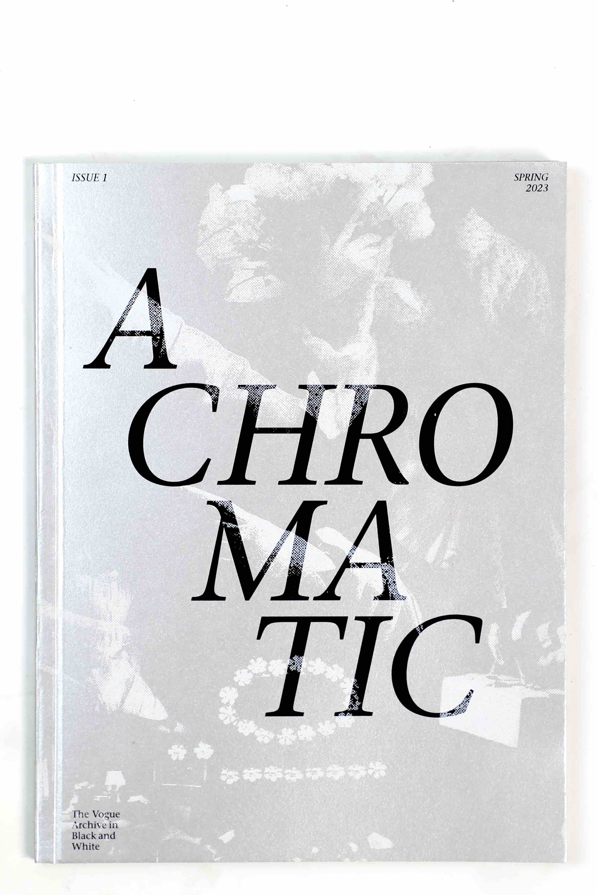
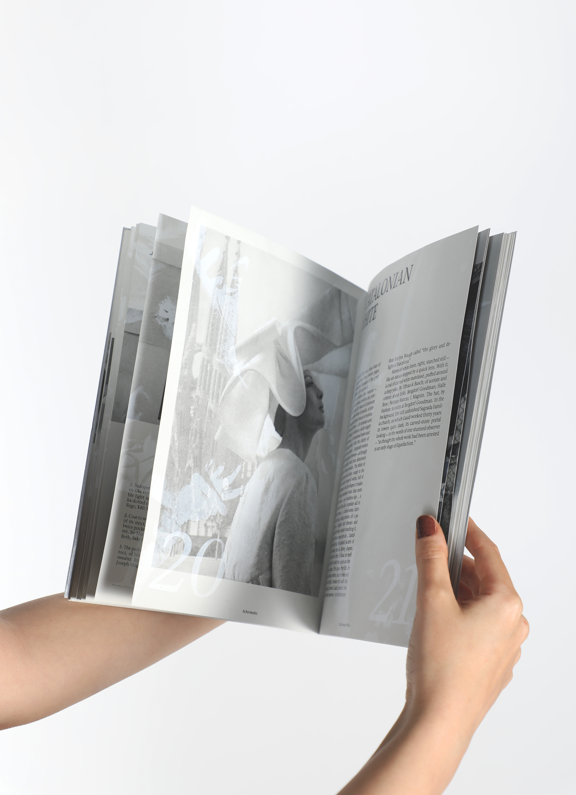
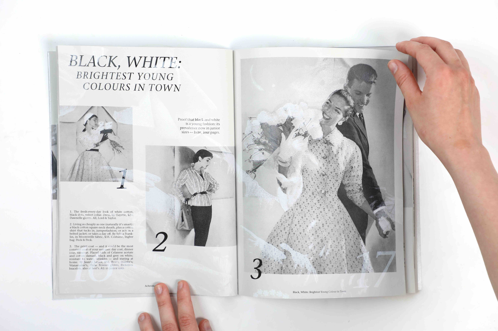
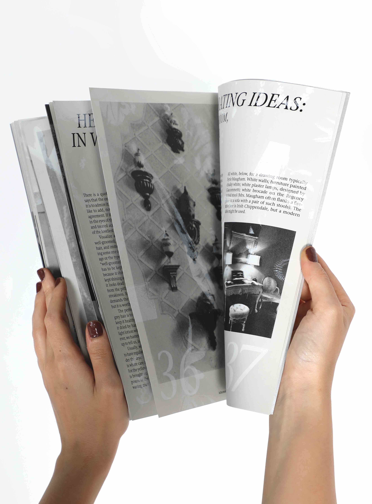
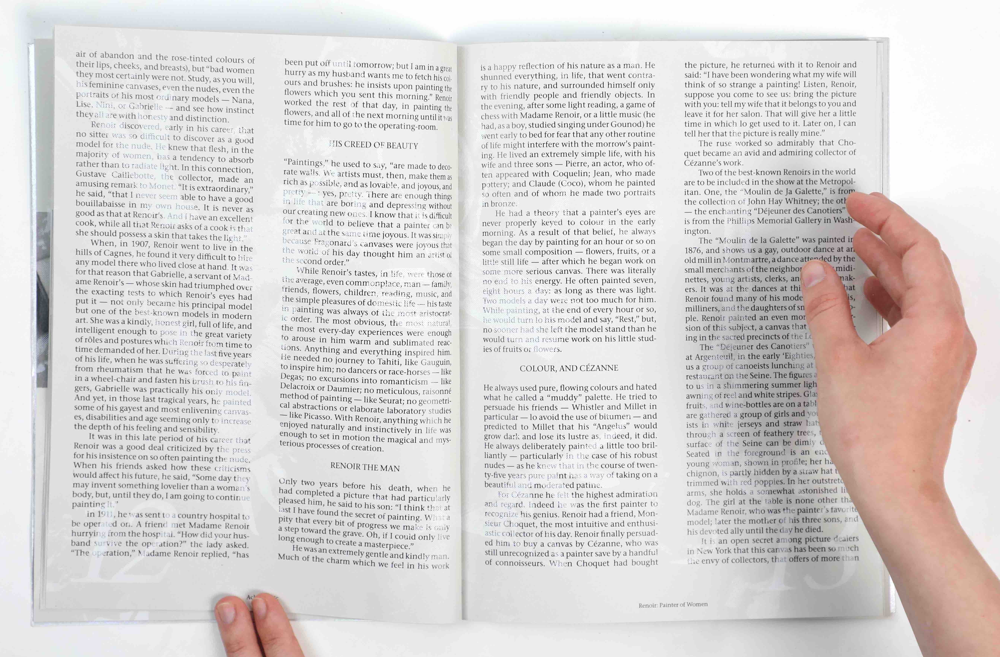
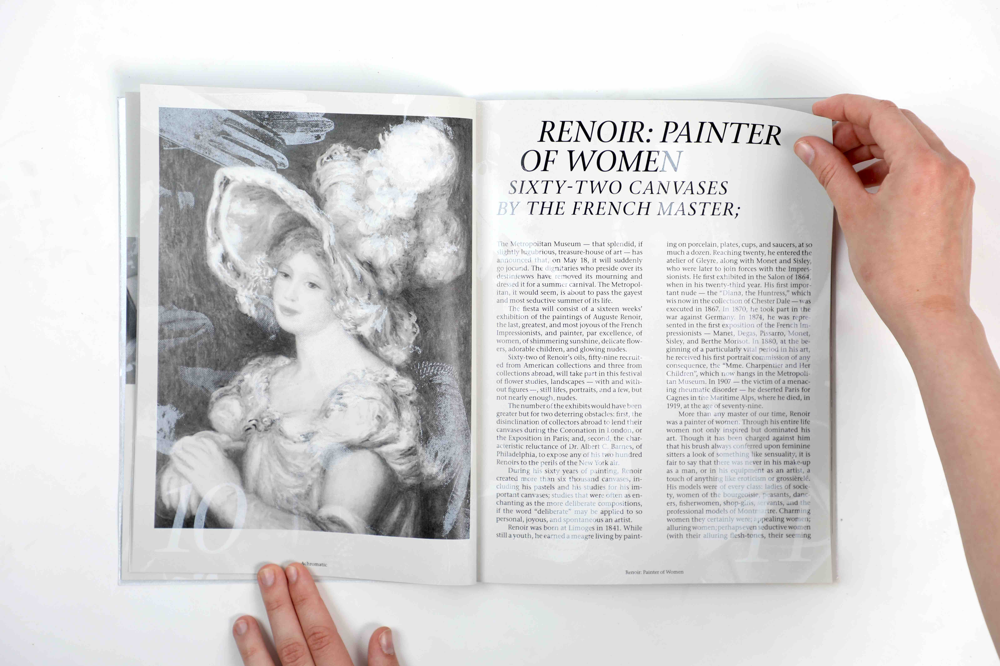
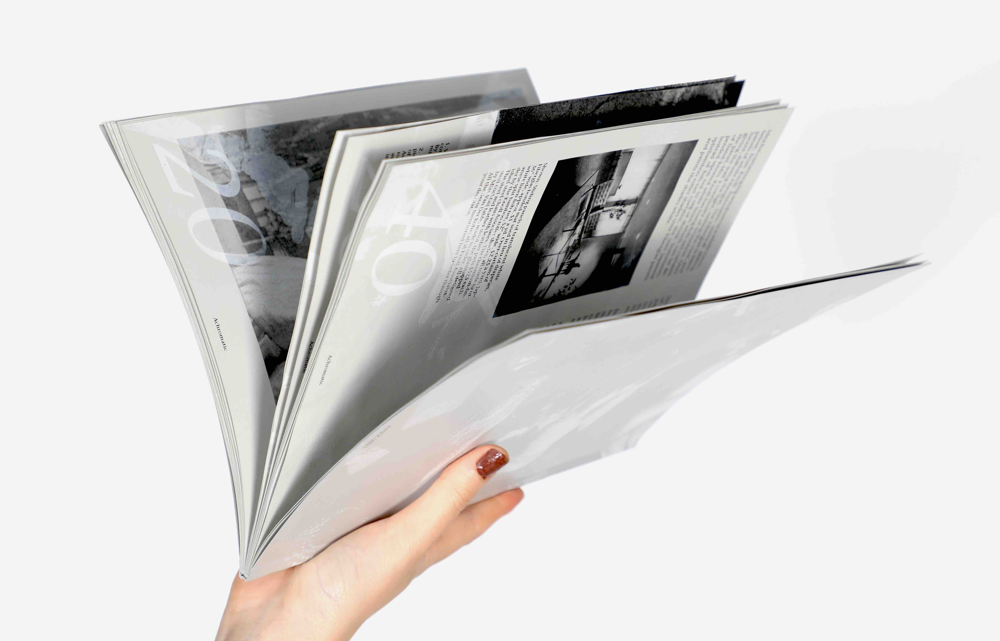
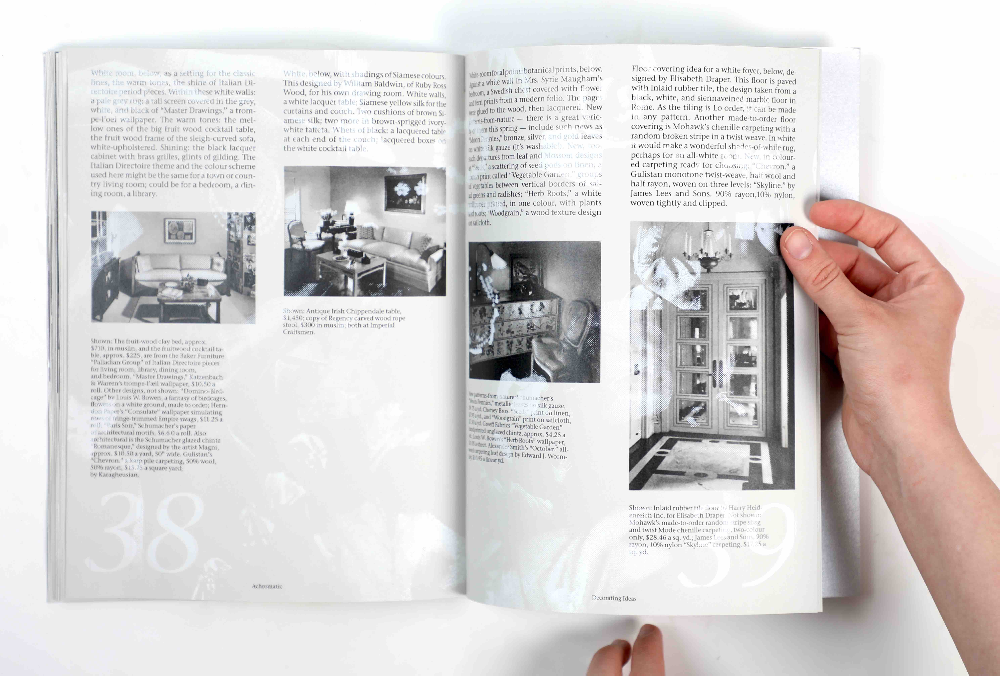
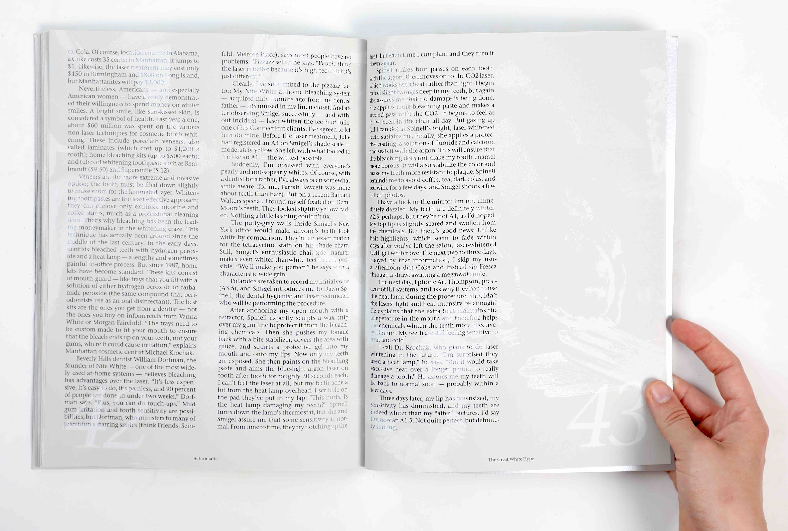

Magazine
June 2023






Laser printed with black
Screen printed with white
Typeface: Stone Serif ITC Pro
All contents are sourced
from the Vogue Archive
Guided by Sandra Kassenar
ArtEZ
2023

Achromatic is a magazine based on the Vogue archive. The restriction of black and white printing became a theme of the whole publication. All articles reflect the theme of white. The magazine is an exploration of how differently the color of white is seen in the fashion industry and graphic design. This way, the white in this publication becomes a choice (as in fashion) rather than an absence of black ink (as in graphic design). The white layer, manually screen printed on laser-printed pages, is a composition of highlights from all the photographs in the publication. Manually positioned on every spread, the white layer not only matches the corresponding photographs but also creates a ghosted pattern of outlines from all the other images.


